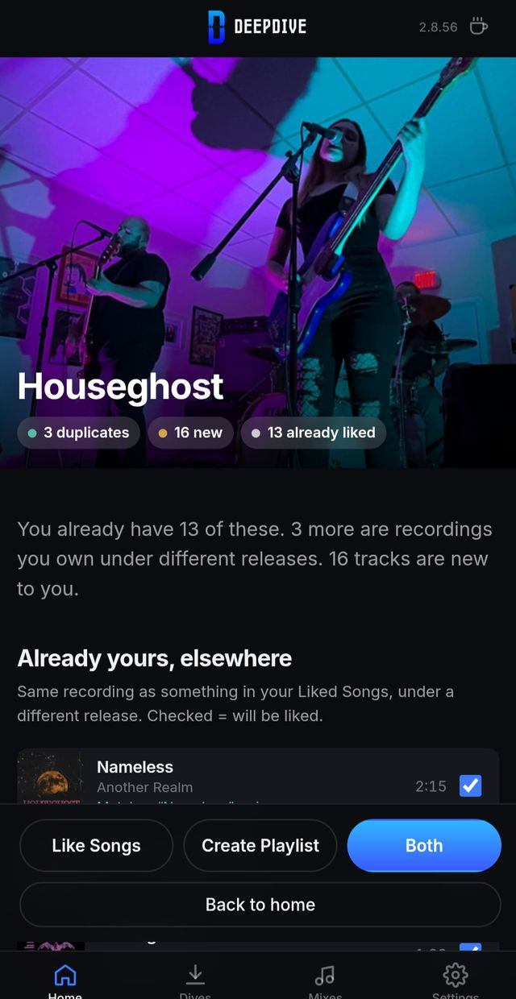

Hear it all.
You liked the album version. You missed the single. DeepDive reads an artist's whole catalogue against your Spotify library and finds the recordings you already love but never saved.
Free, no account, nothing installed. Runs entirely in your browser.
What it does
Point it at an artist and it reads everything they've released — albums, singles, EPs, the compilations they turn up on if you ask — then sorts all of it against your library, track by track.
-
Finds the recording, not the title
A song reissued on an EP under a different name is the same recording. DeepDive matches on that, so the version you already love still counts as yours.
-
An hour of anyone
A dip takes one artist and gives you their best hour, most-played first. Where a dive is thorough, a dip is the one you actually put on.
-
Mixes out of your own library
Forty-odd ways of cutting what you've saved — a year, a decade, songs under two-thirty, artists you own one track by — or build your own from any combination.
-
Genres Spotify won't tell you
Not "rock". Shoegaze, midwest emo, riot grrrl, worked out from what your artists are actually tagged as, then turned into mixes of music you already have.
What you had, and what you missed
Every dive ends the same way: what you already have, the recordings you own under a different release, and everything by that artist you've genuinely never heard — separated and counted.
Nothing is written to Spotify until you choose it. Untick anything, reorder it, cap the length, then build the playlist.

It runs on your machine
There is no DeepDive server. Your library is read by your browser, matched by your browser, and stored on your device — which is why the figure above is a zero rather than a promise.
You bring your own Spotify credentials, so nothing is pooled with anyone else's, and you can revoke access at any time from Spotify.
Start with one artist
Pick someone you think you know well. That's usually where the surprise is.
Open DeepDiveTwo minutes to set up. Nothing to install.